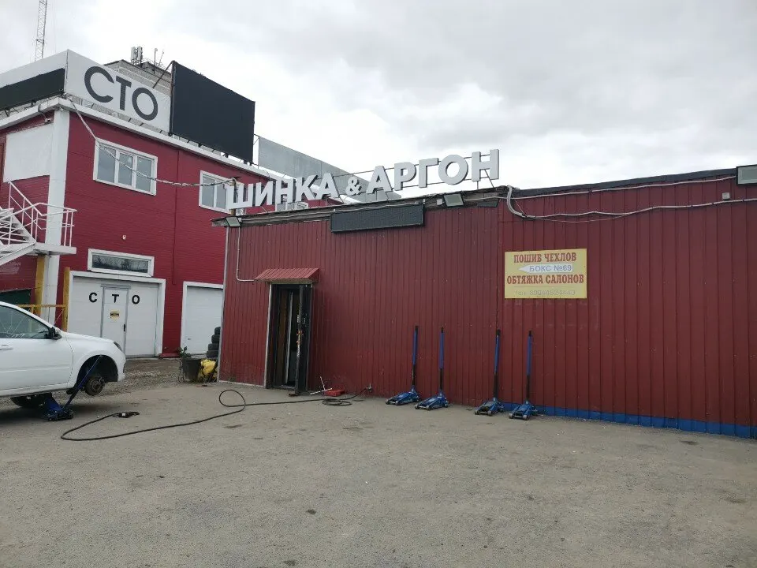
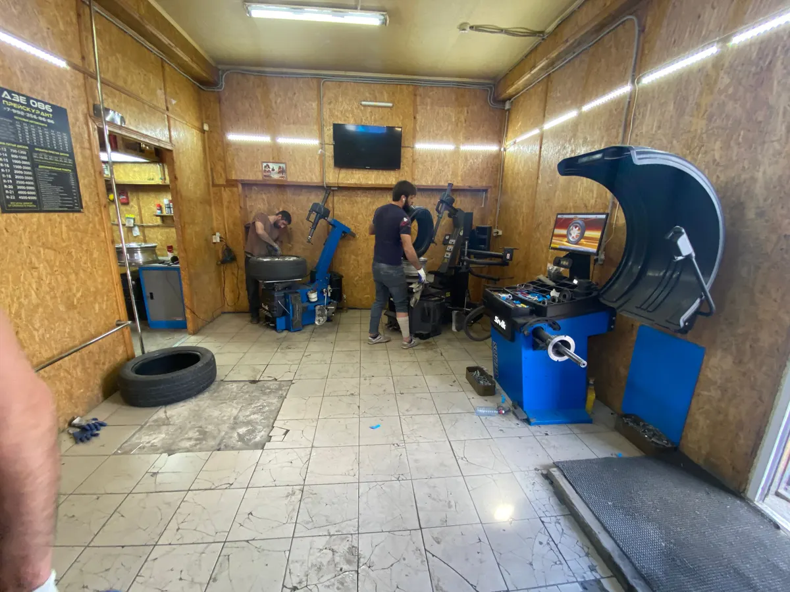
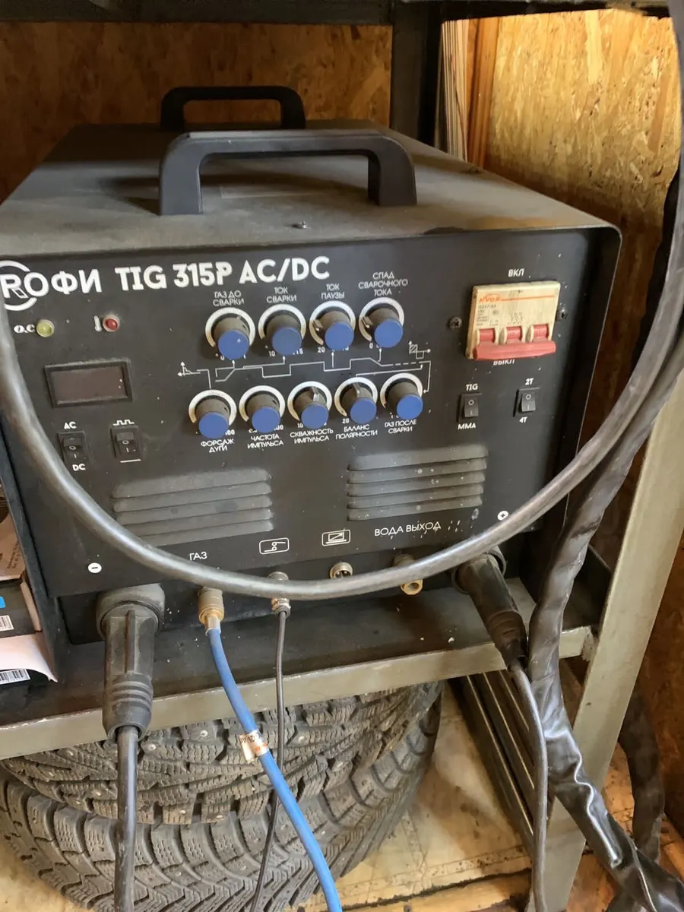
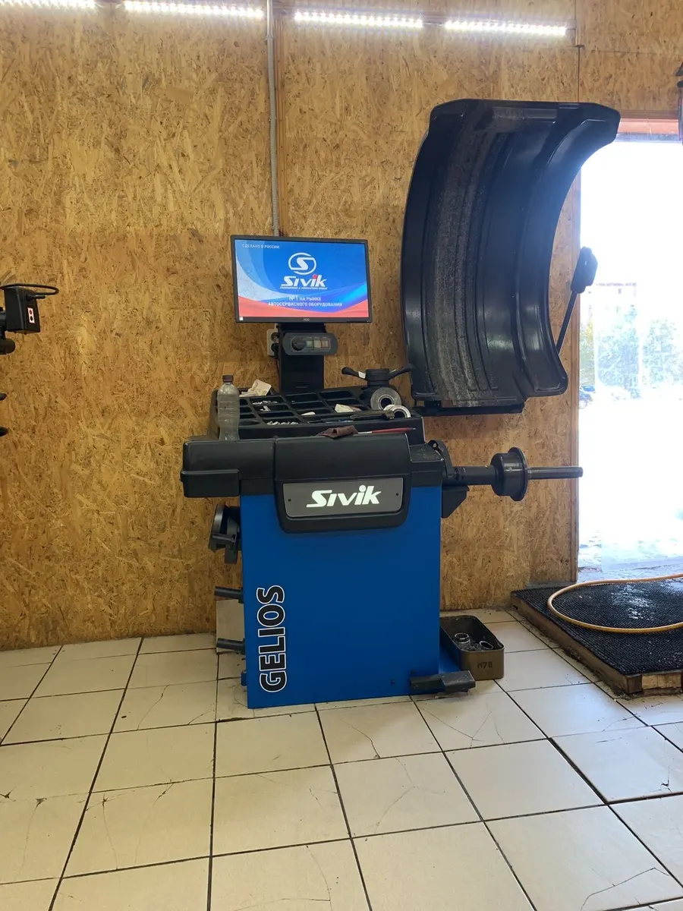

Шиномонтаж и сварка дисков · Сургут
Шиномонтаж в Сургуте: переобувка, балансировка и сварка дисков аргоном
Выберите услугу, день и время - чат откроется с готовым текстом. Работаем ежедневно до полуночи.
- Ежедневно с 9:00 до 00:00
- Рейтинг 4,8, 55 оценок
- Выездной шиномонтаж и хранение шин

Что ещё делают
Входит
- Выездной шиномонтаж
- Хранение шин
- Шиповка шин, утилизация шин
- Гарантия на работы
Отдельно, если нужно
- Оплата: наличные, перевод, СБП, электронные деньги, постоплата
- Цену на ремонт дисков называют после осмотра
- На карточке отмечены скидки
Услуги и цены
На карточке на Яндекс.Картах указана одна цена. По остальным услугам стоимость называют по телефону или в чате после осмотра колеса.
Шиномонтаж
- Переобуть все колёсаСмена резины на четырёх колёсах. Окончательная цена зависит от размера дисков.от 800 ₽
- БалансировкаБалансировка колёс на стенде. Цена зависит от размера колеса.уточнить
- ВулканизацияРемонт проколов и порезов шин. Цена после осмотра.уточнить
Ремонт дисков
- Сварка дисков аргономПравка и сварка литых дисков, трещины после удара. Цена после осмотра.уточнить
- Прокатка и алмазная проточка дисковВосстановление формы и внешнего вида диска.уточнить
- Покраска дисковуточнить
Цены и перечень услуг - с карточки на Яндекс.Картах. Это выборка, актуальные цены уточняйте при записи.
Как записаться
- 01
Выберите услугу, день и время
В блоке записи вверху страницы.
- 02
Нажмите «Записаться»
Откроется чат с готовым сообщением - останется его отправить.
- 03
Дождитесь подтверждения
Мастер уточнит размер колёс и время.



Что говорят клиенты
Сварка дисков аргоном
Клиент выправил и заварил лопнувший диск: шов 10 см, биения нет.
Быстро и качественно
Клиенты пишут про быструю работу и внимательных мастеров.
Работают допоздна
Клиент приехал к закрытию - машину взяли в работу.
Приветливые мастера
Отмечают отзывчивых работников.
Отзывы с Яндекс.Карт
«Выправили диск + заварили, т.к. он лопнул после серьёзного удара. Заварили его аргоном, длина шва 10 см, биения нет. Рекомендую»
Hex Keks · 30 августа 2026
«Самый качественный шиномонтаж, в котором я был: приветливые и отзывчивые работники, мастера своего дела, сделали всё очень качественно и быстро. Благодарю, буду посещать только вас.»
Мага Мамедов · 3 марта 2026
«Лучший шиномонтаж города! Работают быстро и качественно! Приехал к закрытию - взяли в работу, переобуть машину.»
Makogonov007 · 10 ноября 2024
Отзывы с карточки на Яндекс.Картах, без правок.
Частые вопросы
Где находится шиномонтаж?
Сургут, улица Островского, 47с1/1. Парковка рядом, во дворе красное здание с вывеской «Шинка и аргон».
Как записаться?
Выберите услугу, день и время в блоке записи вверху страницы - откроется чат с готовым сообщением. Можно позвонить: +7 (992) 356-86-86.
Сколько стоит переобуть колёса?
По карточке - от 800 ₽ за все колёса. Точная цена зависит от размера дисков.
Варите ли вы диски аргоном?
Да, это отдельная услуга. Клиент писал в отзыве: выправили лопнувший диск и заварили аргоном, шов 10 см, биения нет.
Есть ли выездной шиномонтаж?
Да, на карточке отмечен выездной шиномонтаж.
Хранение шин есть?
Да, на карточке отмечено хранение шин.
Как можно оплатить?
Наличными, переводом, СБП, электронными деньгами или онлайн; есть постоплата.
В какие часы вы работаете?
Ежедневно с 9:00 до 00:00.
Записаться в Шинка и аргон
- Адрес
- Улица Островского, 47с1/1, Сургут
- Часы
- Ежедневно 09:00-00:00
- Телефон
- +7 (992) 356-86-86